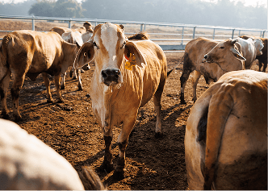
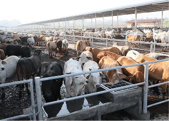

01
PERTAMA
Feedlot
Kegiatan utama penggemukan sapi, baik sapi hasil pembiakan lokal maupun sapi bakalan impor dari Australia.

Dengan jejak global yang masif, Anda dapat dengan mudah menemukan produk segar kami di setiap supermarket besar di seluruh negara yang kami layani.
Kegiatan utama penggemukan sapi, baik sapi hasil pembiakan lokal maupun sapi bakalan impor dari Australia.

Program pembiakan sapi yang dikelola secara internal untuk menghasilkan sapi lokal berkualitas, khususnya untuk kebutuhan kurban.

Program pembiakan sapi betina milik GGL yang dipelihara di kandang peternak mitra.

Program penggemukan sapi yang dijalankan bersama peternak mitra dengan menggunakan sapi milik peternak.